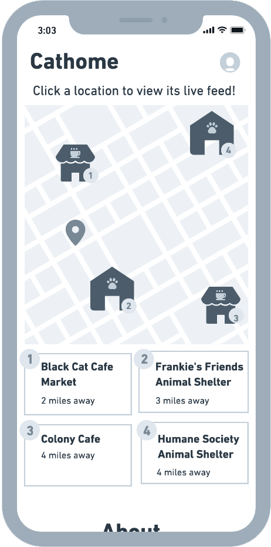

Project Background
Our team was assigned to explore the domain of pet adoption. Unlike previous projects in Interaction Design Studio, we were not provided with a particular problem to solve. Instead, we were to conduct research within our assigned domain, searching for user needs and pain points. This freedom was as exciting as it was daunting as none of us had adopted pets before, so we had a lot to learn before beginning to consider a solution.
This learning process began with secondary research about pet adoption. Each team member sought out information about the domain online and contributed our findings to a shared file. After completing secondary research, we narrowed our focus to adoption from cat cafés.
My Role
My role in this project was creating the visual design, branding, and the interaction design for home page (mobile) and live stream pages for mobile and desktop.
Research Goals:
- Uncover pain points in the adoption process.
- Cover possible restraints in the adoption process.
- Making adoption process preferable for the users.
Getting in the Weeds of Guerilla Research
In order to better understand the pet adoption processes and the various motivation of the customers, our team visited a few cat cafes in the city. We found customers who came to these cafes with the intent to adopt a cat and those who were simply there for the interactive experience.
Most of the stakeholders had a similar pain point of aligning a cat’s personality to the personality of a potential adopter. In particular, business owners and service providers need indication of a cat’s personality in order to foster a social environment within the cafe.


Communicating Needs Through a Narrative
In order to better communicate these ideas, we created a narrative for each one and applied this narrative in the form of a storyboard. The purpose of the storyboard is to demonstrate what role the ideated design plays in helping users achieve their goals.
The scenarios that we came up with and based our storyboards upon were:
- Fostering for people with busy work schedules
- University stress management pet interventions
- AR/AI for simulating cats at home
- CatMate: matching personalities of cats with adopters
- Live feed for cats
All of the above storyboards address needs by either lowering the commitment for adoption, providing users with better indication of a cat’s personality, or both.


Dating Around to Validate Self-Worth Needs
After creating the storyboards, we then conducted speed-dating research in order to determine the validity of the identified needs, and whether or not the ideas presented effectively address those needs. From the first round of speed-dating, we were able to validate that pet adopters need a better way to assess the personality of a pet, as well as the need for people with busy schedules to have the flexibility to adopt a pet.

- Provide a way for business owners to better connect their pets with potential adopters.
- Brainstorm other solutions for pet adopters to better assess the personality of a pet.
Connecting Users with Business Owners
While we were brainstorming about the home screen, we thought about how we could better connect our users to business owners of cat cafes and adoption centers. The home screen is a direct 2-second visual pitch of what value we can provide for both user groups. In our low-fi prototype we feature an About section as well as a map section that shows adoption centers’ location. As users click on a location, they can view their cats available as well as their live streams.

A Personality Quiz to Match Cats with Adopters
As per our user research, customers need a better way to understand what types of cats would be a good match with them. Currently, users have to spend a lot of time with potential cats to get a feel of their personality. We aim to solve this problem by providing a personality quiz. With this short 10-question quiz, users can quickly come to understand which cats their personalities best match.
Live Stream that Allows Adopters to View Cats in Their Natural Environments
Current cat adoption websites offer insufficient information about available cats. As a way to provide up-to-date information for customers and also provide users the flexibility to see diverse cats from multiple cat adoption centers, we created a live stream solution that would allow users to click on different adoption centers and view their live streams.
Through live streams, users can glimpse cats in a natural and social environment, allowing them to gauge individual cats’ personalities without needing to take the time to visit a café.
Establishing an Identity with Style + Branding
To create a cohesive and memorable branding message, I made sure through colors, typography, and logo design, that our brand is clearly differentiated from other adoption sites.
Our logo needed to clearly highlight and communicate our live stream solution. In the logo design I combined the aperture setting in camera plus a cat icon, to create our final logo. In this way, customers can instantly understand and grasp what we do as a brand.
Then, through the addition of color: soft neutrals with bright pop colors, they helped to establish a style that is bright, cheerful, and optimistic.

Mobile User Flow

Final Mobile Designs
Final Desktop Designs

Post-Project Reflection
Due to the time constraint, we weren’t able to conduct usability testing on the prototype. However, after the project ended, I did some quick user testing on the prototypes and found that users really enjoyed the personality quiz solution, in that it provided quick recommendations.
But users were confused about the multiple camera views in the mobile live stream page. One participant raised an interesting point: if the room is a 360 panoramic view, why do you need other camera views? So for now, I removed multiple camera view functions, but to get a more accurate consensus, additional user testing is needed.